|
2001 SARA
Conference
This page
describes my trip to the Society of Amateur Radio Astronomers
(SARA) conference at the National Radio Astronomy Observatory in
Green Bank, West Virginia (NRAO Green Bank). The conference was
three days and I had a great time meeting people, going to
lectures, and using the government facilities to do real
observations.
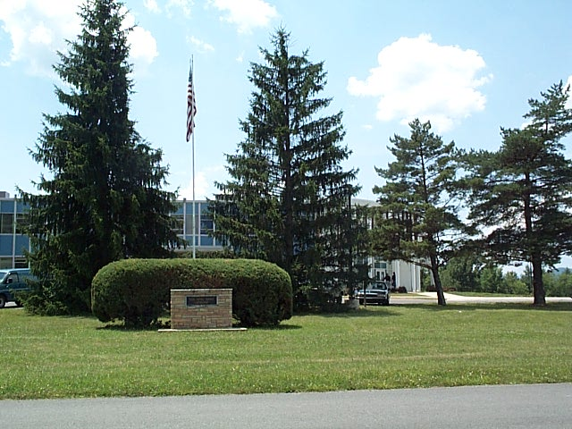 |
So what does one
do at a Radio Astronomy Conference you might ask? We spent our days
in this building, known as the Karl Janksy Laboratory,
listening to lectures from
professional astronomers and physicists, and enjoying presentations
from the members of the club.
|
|
In this picture,
you can see the dormitories on the left and the cafeteria on the
right. You can also see the row of bicycles near the dorm entrance.
These were provided as a courtesy and our main mode of
transportation around the site!
|
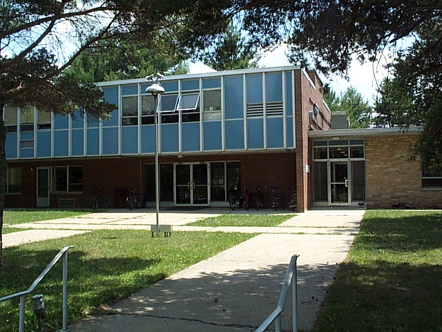 |
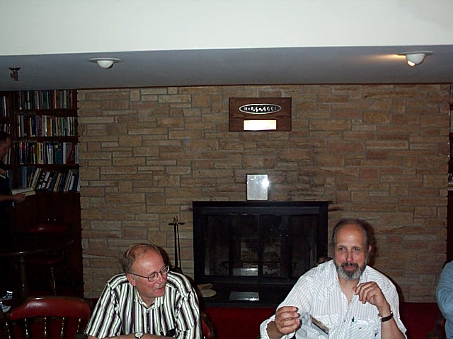 |
On the second
floor of the dormitories above the entrance, we have the Frank
Drake lounge. Where you see a fireplace in
this picture now, there used to be a chalk board. It is said that
this is where he introduced the now famous Drake
Equation. This room also has a small
kitchen, library, and the obligatory chalkboard full of
equations.
|
|
The Green Bank
staff were extremely accomodating to our club. One nice thing they
did was to turn over some of their older surplus equipment to our
club for our projects! We drew names out of a hat to decide who got
what. Here we see everyone perusing the boxes to see what they
might grab in the raffle.
|
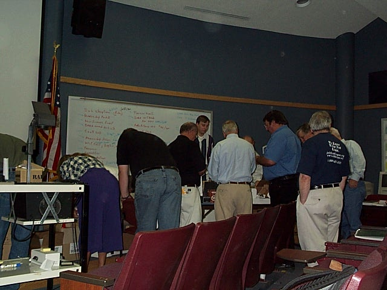 |
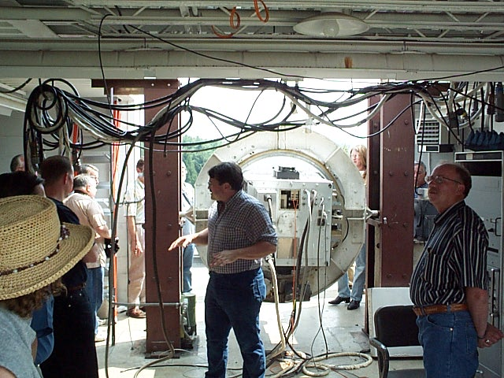 |
Oh boy, more
lectures! Can you believe the good fortune? Here we are listening
to a talk by Gary Anderson on the calibration of the 327 mHz feed
for the 100 meter Green Bank Telescope.
|
|
Radio Telescopes
are extremely sensitive instruments. The spark plugs from the
combustion engine in an automobile can be disruptive to the
receivers that make up the "back end" of the scope. For this
reason, cars are not allowed near the dishes.
|
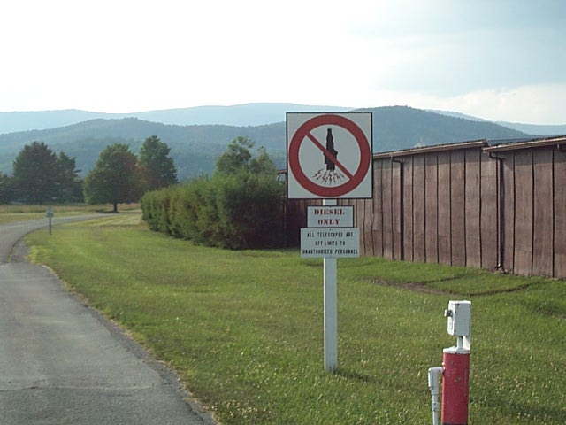 |
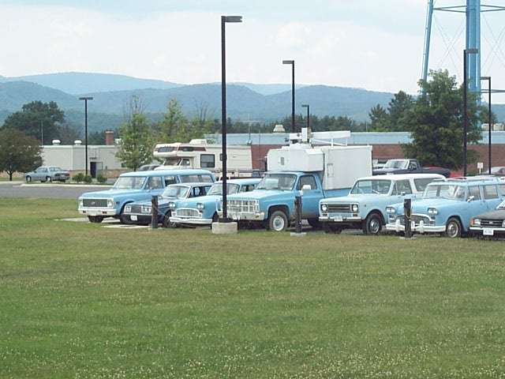 |
Not to worry, we
have an alternate means of transportation...diesel powered cars
courtesy of Uncle Sam! Let's go for a ride...
|
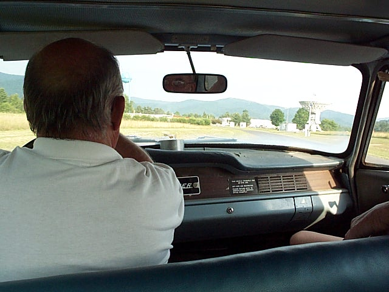 |
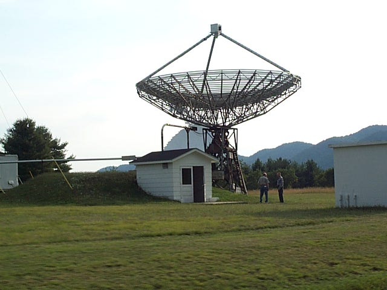 |
This is the 40
foot Radio Telescope where we spent our evenings (and much of the
night for that matter). We are entering this small building that is
halfway below ground.
|
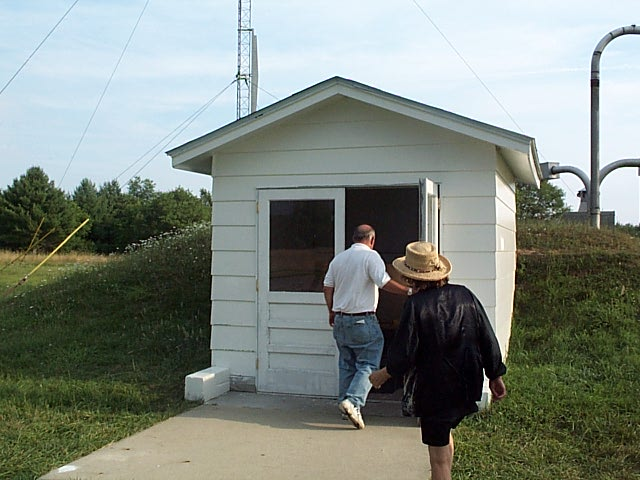 |
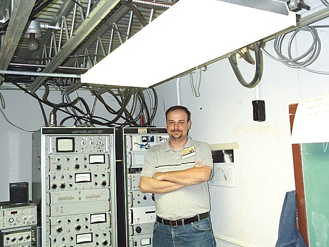 |
Here are the
back end electronics for the 40 foot dish. Electromagnetic energy
received at the dish is converted from RF (Radio Frequency) to IF
(Intermediate Frequency) by mixing it with the output from an
oscillator. The IF signal then comes into the rack to my right
where it can be attenuated and/or strengthened, and finally turned
into a voltage that we can see on the strip chart (printout)! How
exciting is that? Here I get a chance to do some observing. The
strip chart is nice, but they have since updated everything to
computer control (not pictured), including the data collection,
which I much prefer.
|
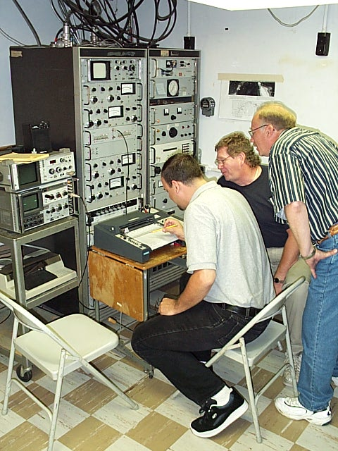 |
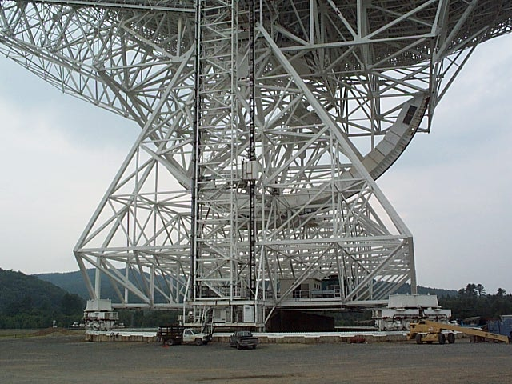 |
Finally, we have
are taken down to see the larget radio telescope in the world. I
think these pictures really don't do it justice. This structure
weighs around 16 million tons and is taller than the Statue of
Liberty. I counted twenty stories up just to get to the bottom of
the dish!
|
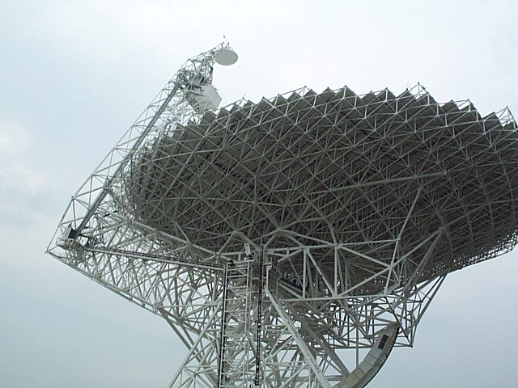 |
|
Once again our
professional counterparts at NRAO come through with the guided
tour. The people on the regular tours had to stay outside the fence
a quarter of a mile away! Certainly a strong argument for seeking
club membership.
|
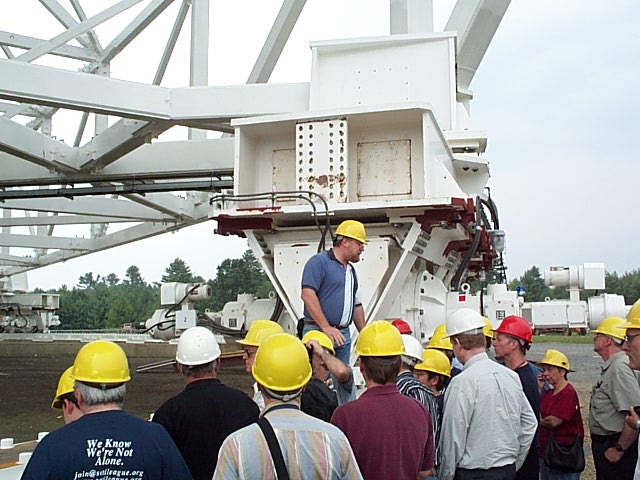 |
|
|
{kind=link}
{kind=link}
{kind=link}
{kind=link}
{kind=link}
{kind=link}
{kind=link}
{kind=link}
{kind=link}
{kind=link}
{kind=link}
{kind=link}
{kind=link}
{kind=link}
{kind=link}
{kind=link}
{kind=link}